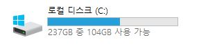
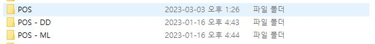
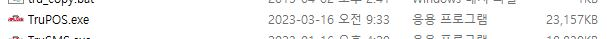
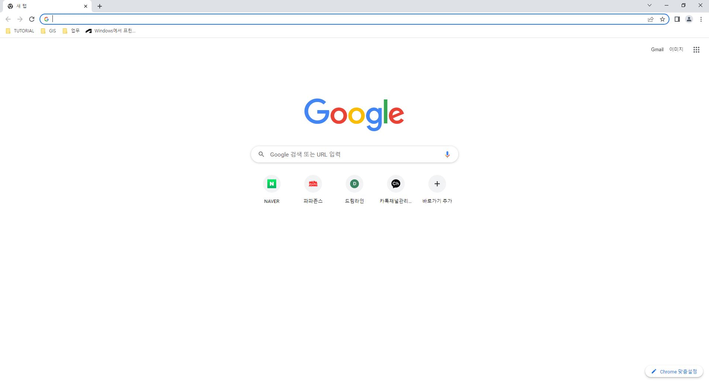
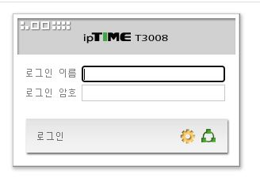
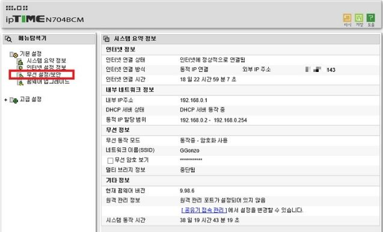
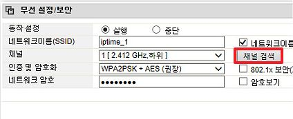

해당하시는 오류를 선택해주세요:
프린터 장애 매뉴얼입니다.
바탕화면의 스풀러_재시작.bat 파일을 실행합니다.
파일이 없을 경우, 아래 파일을 다운로드 받아주세요.
파일 다운로드
관리자 권한 예 선택 후, 실행 시 위와 같은 화면이 출력됩니다.
정상 출력 여부 확인 부탁드립니다.
이후에도 정상적으로 출력되지 않으면 전산팀 채널로 문의 부탁드립니다.
포스 수동 업데이트
바탕화면의 포스수동적용.bat 파일을 실행합니다.
파일이 없을 경우, 아래 파일을 다운로드 받아주세요.
파일 다운로드
포스 업데이트가 실행됩니다.
이후 포스 버전이 전산팀 공지 버전과 동일한지 확인 부탁드립니다.
서브 프로그램(서브 OE, DD, ML 설치 포스 업데이트)
파일 탐색기에서 C드라이브를 선택합니다.
목록에서 TruPOS 폴더를 찾아 선택합니다.
폴더 목록에서 수정한 날짜가 최신인 폴더(상기 화면에서는 POS 폴더)를 선택합니다.
목록에서 TruPOS_exe 파일을 복사합니다.
(1) 오른쪽 클릭, 복사하기
(2) 파일 선택 후 ctrl + C 입력
둘 중 한 가지 방법으로 복사하시면 됩니다.
다시 이전 폴더로 돌아와서 수동으로 업데이트하고 싶은 폴더를 선택한 후 붙여넣기 후 덮어쓰기 해줍니다.
바탕 화면의 서브 프로그램 실행 아이콘을 선택하여 업데이트가 적용되었는지 확인합니다.
어려우시거나 업데이트가 적용되지 않을 경우, 전산팀 채널로 문의 부탁드립니다.
와이파이 장애 매뉴얼입니다.
인터넷 창을 실행합니다.(크롬, 엣지, 웨일 무관)
주소창에 192.168.0.1 을 입력합니다.
아이피 타임 설정이 실행됩니다.
기본 설정 아이디: admin, 비밀번호: admin
관리 도구 버튼을 클릭합니다.
좌측 메뉴에서 무선 설정/보안 항목을 선택합니다.
채널 검색을 누르고, 최상단의 채널을 선택합니다.
기존채널과 동일한 채널일 경우 하나 아래의 채널을 선택합니다.
와이파이 연결 상태를 확인합니다.
이후에도 정상적으로 접속되지 않으면 전산팀 채널로 문의 부탁드립니다.
기타 문의는 전산팀 채널로 문의 부탁드립니다.
매장명, 장애 증상 적어서 보내주시면 확인하는대로 답변 드리고 있습니다.
예시1) ○○○점, 1월 1일자 26번 주문 완료처리 요청합니다.
예시2) ○○○점, 1월 3일자 17번 주문 취소처리 요청합니다.